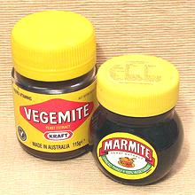

SAFARI
Users
- Mushroom Varieties - Fresh & Dried
- Lichens
- Yeast
- Mold
- Health & Nutrition
Opisthokonts are a clade of single celled organisms within the animal lineage, Podiata. Two populations of this clade separately developed into very complex multi-celular organisms: Fungus and Animals.
Unlike plants, animals and fungi can not generate their own substance and energy from sunlight and raw materials. They subsist entirely by breaking down and absorbing dead or living plant or animal material. Fungi also break down rock, absorbing minerals and making them available to plants. Like animals, but unlike plants, mushrooms generate Vitamin D from exposure to sunlight.
The photo to the left shows what the main body of a fungus we would call a "mushroom" actually looks like. The fibers are called "mycelium", and live in the ground or in decaying vegetation. Some are among the largest, heaviest living things on earth - but all unseen to us. Under some circumstances, such as food supply stress, they send up fruiting bodies which are the "mushrooms" we pick for food or "medicinal purposes". Photo by Rob Hille distributed under license Creative Commons Attribution-ShareAlike v3.0 unported.
It is now suspected by some botanists that the network of mycelium may act as an Internet for plants, as some start taking defensive measures in respond to problems experienced by similar plants at a considerable distance. It is already known that the mycelium network acts as a plumbing system amongst plants, distributing water and nutrients. Many fungi live in a close relationship with particular trees or shrubs, providing minerals and nitrogen in exchange for carbhydrates and water.
Mushroom Varieties
This is by no means a comprehensive list, but includes those I've found available for purchase at reasonable prices here in Southern California. Not included are most of the edible varieties only found wild, though I have included links to sites that do list those.
Not long ago it was difficult to find any but supermarket white mushrooms, but with a proliferation of ethnic markets in the US, variety is growing steadily and prices are declining. Because of its large Asian population, many mushroom growing operations have been set up in California. Currently (2010) there is a large operation being set up as a joint venture with Japan. and this should improve the situation even more as it ramps up.
Many mushrooms are highly toxic, and some toxic varieties look very
much like edible ones, so wild mushrooms need to be carefully identified
before consumption. A few varieties which are themselves non-toxic cause
alcohol to become highly toxic.
Amanita
[Amanita muscaria and many other Amanita spp.]
This large family of mushrooms includes many highly toxic varieties that should not be consumed on penalty of death (self enforcing). Milder varieties are sometimes taken in sub-lethal doses for psychoactive purposes beyond the scope of this document. Some Amanitas are used in cooking but rarely in the US.
With proper preparation (boiling in plenty
of salted water which is discarded) the dread Amanita muscaria (photo) has
been reported edible, but other toxic mushrooms are not disarmed by cooking.
Death from mushroom poisoning is generally from liver failure, takes several
days and is not pleasant.
Photo © bs0006.
Beech Mushroom
- see Hon-Shimeji.Black Fungus
[Wood Ear, Cloud Ear; Kikurage (Japan); Mu-ehr (China); Auricularia polytricha, also A. auricula-judae, Hirneola auricula-judae and others (variation in color)]
This thin nearly black fungus was formerly only sold dried, and will expand to about 4 times the dried volume when soaked. Today it can often be purchased fresh in Asian markets here in Los Angeles. In China and Korea, it is often used in soups and stir fries for its slippery but crunchy texture. It has little flavor of its own but does absorb flavors from other ingredients it's cooked with. In the photo there are three dried ones on the left, each a little over and inch across, and on the right a rehydrated one that was originally the same size as one of the others.
It is held in Chinese medicine to improve blood circulation and relieve
atherosclerosis. Preliminary tests in Western medicine are encouraging and
include confirmation of anticoagulant properties.
Details and Cooking
Black Trumpet
[Black Chanterelle, Horn of Plenty, Trumpet of Death; Trumpets de Mort (French); Craterellus cornucopioides]
These mushrooms belong to a genus closely related to Chanterelles (Cantharellus). They tend to look pretty ugly, often tattered, but the flavor and aroma are excellent, and they stay reasonably firm when cooked. They are usually found wild in leaf debris of temperate deciduous forests in North America, Europe and southern Australia, particularly around oaks.
Black Trumpets are particularly popular in France, where they are quite
common. They dry well, and dry ones are sometimes powdered as a flavoring.
Some use black trumpets (fresh or dry) to flavor dry white wine, slipping
a few into a freshly opened bottle and refrigerating overnight. The
largest of the photo specimens was 7 inches long and 2 inches in
diameter, weighing 3/4 ounce.
Blewit
[Blue Foot (when cultivated); Lepista nuda]
Wild and cultivated mushrooms with blue tinted stalks and light beige caps.
These mushrooms should be cooked to bring out their unique flavor and because
some people are sensitive to blewit toxins when eaten raw. Their flavor is
robust enough to complement casseroles, risottos and other substantial dishes
- if you can afford them. The cultivated photo specimens, purchased at Whole
Foods Market for $40/pound, were typically 2 inches across the cap and weighed
1/2 ounce each.
Boulet
- See Porcini.Cep
- see Porcini.Chanterelle
[Girolle (Italy), Pfifferling (Germany), Cantharellus cibarius, C. craterellus and other spp.]
This funnel shaped mushroom is very highly regarded among food
enthusiasts in Europe and North America. They are only found wild since
all attempts to cultivate them commercially have failed, so they are
seasonal and expensive. Always served cooked to bring out their woodsy
flavor, they are sturdy and can stand up to being stirred and
sautéed.
Chaga
[Inonotus obliquus of family Hymenochaetaceae]
This parasitic fungus grows on white birch trees in very cold regions
around the Northern Hemisphere. The clinker itself is sterile - it does
not fruit until the tree it is growing on has died. In parts of Siberia it
is used to make a tea in place of regular tea or coffee. This tea is said
to have medicinal properties, particularly against cancer. Scientific
study is ongoing, but so far inconclusive. Regardless of the result, Chaga
can't be used generally because the supply is too limited, and cultivated
examples lack potency
Photo by Thomas Cekanavicius distributed under license Creative
Commons
Attribution-ShareAlike v3.0 unported, attribution required.
Cloud Ear Fungus
- see Black Fungus"Cordyceps"
Within fungus order Hypocreales are seven families, a couple of which are noted for a few species that are culinary / medicinal items. These are generally called Cordyceps, though they may or may not still be so named in scientific circles. Those so noted parasitize insects. Cordyceps is not a culinary item in North America, but soups with medicinal properties are very popular with East Asians, so cordyceps is used in some of them.
Caterpillar Fungus[Cs-4; Champignon Chenille (French); Yartsa Gunbu (Tibet); Dong chong xia cao (Chinese); Ophiocordyceps sinensis formerly Cordyceps sinensis, now of family Ophiocordycipitaceae] This fungus parasitizes a specific moth caterpillar. It came to strong attention in the West in 1993 when the spectacular Olympic performance of some Chinese women was ascribed to "cordyceps and turtle blood". Demand for cordyceps became intense among our athletes, notorious for doing absolutely anything to improve performance. Later circumstances strongly suggest it was something other than cordyceps that provided the performance boost. It matters not - cordyceps is now embedded in the minds of the
"health conscious", causing the price to skyrocket. "Best quality
large larva" has exceeded 2008 US $500 per ounce. It is sold complete
with caterpillar because the caterpillar innards have been completely
consumed and replaced with fungus. No attempt to cultivate this fungus
in caterpillars has been successful. In China, O. sinensis is
cultivated in a broth of mashed silkworms. In the U.S. and Japan, it is
cultivated on grain - not as good, but the FDA has yet to approve
silkworm mash for human consumption. Research is ongoing to determine
if any of the myriad medicinal benefits claimed by Asian medicine
(everything from treating erectile dysfunction to curing cancer)
are valid.
Photo by L. Shyamal distributed under license
Creative Commons
Attribution-ShareAlike v3.0 unported.
Cordyceps[Species and family not yet identified] This branching form of cordyceps is common in the large Asian markets here in Los Angeles (insects not included). The photo specimens were purchased for 2017 US $2.99 for 1.8 ounces. Package instructions (with a little correction in wording) are to
rinse in cold water, then cook with other desired ingredients and
serve hot. Serving size given was one cup, using the entire 1.8
ounces.
|
Crab Mushroom
[Seafood Mushroom; Hypsyzygus tessulatus alt H. marmoreus]
This appears to be a cultivar of the Shimeji group,
very similar to the white Hon-Shimeji except for the very long relatively
thick stem. They stand up quite well to light cooking, as in soups. The
flavor mellows a little but stays about the same. This cluster was 7
inches long and weighed 4-1/2 ounces. The largest caps were about 7/8
inch across, though I have seen bigger ones.
Crimini
[Italian Brown; Agaricus bisporus]
Similar to the White Mushroom (note the same
species name) but darker in color and with a deeper, earthier flavor.
These are called for in many Italian recipes. They will keep up to 7
days refrigerated in a paper bag.
Crimson Mushroom
[Scarlet Waxcap; Hygrocybe punicea]
These deep red mushrooms with widely space yellow or yellow-red gills
and stems are found in grasslands in Laos, Cambodia, North America and
parts of Europe. The caps start out bell shape, then flatten to 1-1/2
to 4 inches across. They are mild tasting and commonly eaten in Laos
and Cambodia. I have a Cambodian cookbook calling for them, but the
recipe fails to mention when they should be included in the stir fry.
They are listed as edible in Europe, but there have been reports of
adverse reactions in North America. Subst: firmer versions of oyster
mushrooms will work, except for color.
Djon Djon
[Psathyrella hymenocephala, P. coprinoceps or similar]
This fungus has been very difficult to pin down, but the leading candidates are Psathyrella species hymenocephala and coprinoceps. Dried, it has been important in the cuisine of Haiti as the key ingredient in the popular national rice dishes, Riz Djon-djon and Riz Noir.
Unfortunately, it has recently become scarce and very
expensive (around 2015 US $72 / pound). This is not surprising. This
fungus lives on rotting wood, and the Haitians have almost totally
deforested their end of the island. The border can easily be seen from
space, in many places desert brown on the Haiti side and bright green on
the Dominican Republic side. Our photo is of P. candolleana,
closely related to both the suspect species (they all look pretty much
alike).
Photo by Thomas Pruß distributed under license
Creative Commons
Attribution-ShareAlike v3.0 unported, attribution required.
Earthstar
[Black Mushroom; Astraeus hygrometricus]
Varieties of this mushroom grow wild in northern California, but these are canned ones from Thailand. The can was labeled with three names, "Black Mushroom", "Earthstar" and Astraeus hygrome trieus. These mushrooms are the shape of a slightly flattened leathery sphere which encloses a puffball. When the fungus is ripe, and the weather is damp, the sphere breaks into a star shape exposing the puffball. If the weather dries the star closes. These were picked well before maturity. Be aware that safety of wild varieties is not proven. See links (F6 and F7)
The spherical enclosure is somewhat crunchy and a bit leathery in
texture. Simmering for half an hour softens it only a little, but the
mushroom develops an interesting meaty flavor - more meaty than any other
mushroom on this page. The larger photo specimens are about 1 inch
diameter while the smallest in the can was 1/2 inch. They averaged a
little under 1/4 ounce each.
Enoki
[Flammulina veluptipes]
This distinctive mushroom grows in clusters of long thin stems
each topped with a very small round cap. A favorite of Japanese cuisine,
they have a mild flavor and a slight crunch and are generally used raw.
If you attempt to cook them, they become limp and stringy and the flavor
does not improve. left attached to their growing matrix and loosely
wrapped they will keep up to 14 days in the refrigerator.
Enoki - Golden
These have just appeared in some of the Asian markets in Los Angeles (2012) - until now enokis were always white. The photo specimens were 3-1/2 inches high and the caps were up to 0.28 inches diameter but they grew much longer in the refrigerator. These seem a bit sweeter with a bit more mushroom flavor than regular enokis. When cooked they remain crunchy, but the color becomes muddy and the flavor a bit washed out. All in all, I think these are best used raw scattered as a garnish as the white enokis are.
Hazelnut Mushroom
The package says these mushrooms are found in Northeast China growing under hazelnut trees. From fragments in the package it looks like these can grow to about 3 inches diameter, but most were much smaller. The package suggests these be used in stews, stir fries and soups.
This mushroom produces a dark soaking liquid with a dark, woodsy,
slightly sharp, slightly spicy flavor. The caps stay fairly firm. The
stems should be chopped for use. Use these in recipes where stronger
flavors are appropriate.
Hon-Shimeji (Brown, White)
[Beech Mushroom, Clamshell Mushroom; Hypsyzygus tessulatus alt H. marmoreus]
In nature these tiny mushrooms grow high in beech trees but are
grown commercially on prepared corn cobs. They're sold in clusters of
medium length stems with caps 1 inch in diameter and smaller. Both light
tan cap and white cap varieties are sold in Asian markets. They are used
cooked (they're a bit bitter raw) and "stem on", sautéed or in
stir fries or soups, and remain slightly crunchy even with longer
cooking. The flavor is quite mild, slightly sweet, slightly nutty so
use them in dishes that won't overpower them. Left on their substrate,
they will keep for about 10 days refrigerated in a paper bag.
Jinding Mushroom
[Elm Yellow Mushroom, Jade Emperor Mushroom, Orange Mushroom, Elm Sanyuan Mushroom; Pleurotus citrinopileatus]
These are very fragile dried, but cook up rather firm, with the somewhat
tough stem fading into the cap. It's best to chop them up after soaking.
The soaking liquid is light and mushroomy. They would be good for light
soups and the like. The largest in a package obtained from a large Asian
market in Los Angeles was 1.6 inches diameter with a 2 inch long stem,
but most were much smaller.
Lion's Mane Mushroom
[Pom Pom Mushroom, Bearded Tooth Mushroom, Satyr's Beard, Bearded Hedgehog Mushroom; hóu tóu gu (China, lit. "monkey head mushroom"); Yamabushitake (Japan, lit. "mountain priest mushroom"); Nam Dau Khi (Viet, lit. "monkey head mushroom"); Norugongdengi-beoseot (Korea, lit. "Deertail Mushroom"); Hericium erinaceus]
These mushroom, native to temperate zones of North America, Europe and
Asia, are edible and highly medicinal. They are under study for treatment
of a number of serious conditions, including some cancers, Alzheimer's
and nerve damage. They grow on hardwood trees, especially Beech, as
irregular spheres with no stem, covered with long thin soft spines.
Fruiting bodies are are rather rare in the wild, and are Red Listed in
much of Europe, but are amazingly easy to produce in cultivation.
Details and Cooking
Lobster Mushroom
[Hypomyces lactifluorum growing parasitically on Russula or Lactarius species mushrooms.]
This is a case where a mold-like fungus parasitizes a mushroom, transforming it into something different. When the parasite is mature the host mushroom may be impossible to identify, but it has not been known to infect poisonous mushrooms. The photo specimen, purchased at a Southern California farmer's market, was 5-1/4 x 4-3/8 inches and at its thickest point was 1-5/8 inches thick. Weighing 4-7/8 ounces, it cost US $8.24 or $1.69/ounce.
Exact flavor can depend on the host mushroom. In the case of
Lactarius piperatus it tones down the hotness and makes it
more edible. Texture is firm, somewhat crunchy, and remains so
with cooking. This mushroom is often used in soups, particularly
seafood soups since it sometimes has a sort of seafood flavor.
Maitake
[Hen of the Woods; Grifola frondosa]
These frilly funguses start from a tough base and become somewhat
crumbly at the outer edges. They are just a bit bitter raw and are
generally cooked to bring out their woodsy taste and distinctive aroma.
Maitakes have generally been hard to get and very expensive, around US
$25/pound, but prices are dropping as production methods are improved.
I purchased these, imported from Japan, for about 2012 US $7.50/pound
from a large Asian market in Los Angeles. This cluster was about 4-1/2
inches across and weighed 4-1/4 ounces. Left on their substrate and
loosely wrapped they will keep up to 10 days refrigerated.
Morel
[Morchella Esculentia]
This highly prized mushroom grows in Europe and some parts of North
America. It has a wide hollow stem topped with a conical sponge-like cap
which is also hollow with very thin walls. Morels are very light in
weight but provide a rich nut-like flavor. They are highly resistant to
cultivation with only one year-round grower using a patented process.
The rest are harvested in season and tend to be expensive when available.
They are also available dry but the flavor is different. Fresh ones keep
around 10 days refrigerated in a paper bag.
Nameko
[Butterscotch Mushroom, Pholiota nameko]
Much appreciated in Japan, this mushroom is very difficult to find fresh in North America, but can be found canned in some Asian markets. Fresh Namekos have a slippery gelatinous coating on the cap, which may be a turn-off to some, but is appreciated by others. When canned this coating becomes part of the canning liquid which will be gelatinous to a greater or lesser extent depending on processing.
The photo specimens were purchased pickled in an 880 ml jar. The
largest was 3/4 inch across the cap and 1-3/4 inches long, but they do
grow to as large as 1-1/2 inches across the cap. The average weight of
the specimens was 0.08 ounces (13 to an ounce). In Japan they are often
added to miso soup.
Oyster Mushrooms
[Abalone Mushrooms, Pleurotus ostreatus, P. sapidus, P. pulmonarus, P. citrino-pileatus and species, all within family Pleurotaceae]
Oyster mushrooms come in a number of varieties in different sizes and colors, generally of mild flavor. The off-center stem is characteristic and many are fan shaped, highly irregular and overlapping. some varieties are highly perishable, lasting only a few hours, but some are quite durable. Photo of P. pulmonarius by Jörg Hempel distributed under license Creative Commons Attribution-ShareAlike v3.0 Germany attribution required.
Given the imporatnce of this diverse family and the growing number of
varieties available in our markets, these mushrooms now have their own
Oyster Mushrooms page.
Po-Ku Mushroom
- generally these are canned Shiitakes from China or Korea.Porcini
[Boulet (US), Cep (French), Boletus edulis]
Considered by some the "king of mushrooms", the boulet has a dome shaped cap ranging from tan to reddish brown with a sponge like underside rather than gills. The stem is thick and white to yellow. Fresh porcini can be ordered on-line, but must be shipped express because they are rather perishable.
Dried Porcini are becoming fairly common in U.S. groceries, but at
about $5.00 per ounce and up. I buy mine for 2016 US $1.75 per ounce
in an 8 ounce package from Nuts.com. The soaking liquid is very fragrant
with good mushroom flavor, and so is the flesh, but it becomes very
mushy, so depend on these for flavor, not texture.
Portobella
[Portabello, Agaricus bisporus]
A variety of Crimini that is given a longer growing
cycle allowing it to become more mature before harvesting. Note
the species name is the same as the Crimini and the
White Button mushroom. It can reach sizes of up to
6 inches across and is often used for stuffing or as a substitute for a
meat patty in vegetarian hamburgers. The flavor is deeper and meatier
than the less mature Crimini. They can be kept up to 10 days
refrigerated in a paper bag.
Psilocybin
[Magic Mushroom; Psilocybe Cubensis and other spp.]
This is a popular cultivated psychoactive mushroom the use of which is
beyond the scope of this document. Unlike some other psychoactive
mushrooms, the toxicity of psilocybins is very low.
Photo by Zergboy contributed to the Public Domain.
Puffball
These small puffballs were canned in Thailand. They have a leathery but crunchy outer shell containing a spore mass which varies in color depending on maturity of the individual ball. The spore mass has a faintly medicinal flavor and darkens with the color. The outer shell has a mild mushroom flavor. Puffballs in the can varied in size from 0.43 inch to 1.12 inches.
Royal Sun Agaricus
[Almond Mushroom; Himematsutake, jisongrong (Japan); Agaricus subrufescens common but improper A. blazei]
Originally found in northeastern North America, this mushroom has also been found in California, Brazil, Taiwan, Philippines and in some regions of Western Europe. Unfortunately, its widespread discovery has resulted in a whole pile of wrong scientific names, with A.blazei most common in the health food industry.
This is an excellent eating mushroom, somewhat sweet with a scent and
taste of almonds. While grown in northwest U.S. and exported from Brazil
and China, demand is so high for its medicinal properties few are available
for eating. It is noted as a stimulant for the immune system and as a
treatment of diabetes and radiation exposure (so it's very popular in
Japan right now). Photo by Nathan Wilson distributed under
license Creative Commons
Attribution-Share Alike v2.5 Generic.
Shiitake
[Chinese, Black or Forest Mushroom, Oak Mushroom; Hed Horm (Thai); Lentinus edodes]
Varying from tan to dark brown, Shiitakes, both fresh and dried are almost always used cooked. They are much tougher than Criminis and have a more intense mushroom flavor. Dried they run from 1-1/2 to 2 inches in diameter and weigh 7 to 10 to the ounce. Fresh they run from 1-1/2 to 2-1/2 inches in diameter and weigh 3 to 5 to the ounce. Of the photo specimens the three on the left are fresh and the two on the right are dried.
Dried Shiitakes are generally sold as "dried black mushroom" or
"dried forest mushroom". In any case they are easily identifiable due to
the texture of the top of the cap. One ounce, soaked and wring out will
weigh about 4 ounces. Fresh shiitakes are now produced in large quantity
in several areas of the U.S. and are ever easier to find. In many
East Asian markets a special grade of dried shiitakes that is very light
in color with deep crackling on the top surface is sold at very high
prices, often in windowed gift boxes. Shiitakes, along with some other
mushrooms have been found to have significant antitumor and antivirus
properties.
Details and Cooking.
Silky Mushroom
The grower calls these "Silky Mushroom" to describe the texture when cooked. This name is suboptimal, because the name is also in use for another "Silky Mushroom". The texture and flavor of that one is not well described because persons who sampled them were too distracted by the business of dying to provide a coherent report. These are not fatal, and may, in fact, be dried Namekos. They are from north eastern China and were obtained from a large Asian market in Los Angeles.
The soaking liquid is light in color with good mushroom flavor. The
stems are relatively tender, and the heads have a silky texture similar
to that of properly soaked fresh shiitakes, but the flavor is much
lighter, with a hint of white mushroom flavor. These are good for
inclusion in lighter soups and the like.
Stinkhorn
[Bamboo Fungus, Bamboo Heart, Maiden's Veil, Veiled Lady; Dictyophora indusiata]
Stinkhorn is available dried in well stocked Oriental groceries. They look very unpromising as nearly weightless papery shreds, but they rehydrate into a mesh stem with an ethereal floating veil. Rehydrate them by soaking in lightly salted water for 20 minutes, then in boiling water for 1 minute.
They have just a little earthy flavor of their own but a delicate
crunchy texture that holds up well to cooking, and the mesh structure
holds light sauces and broth flavors extremely well. Use them in soups,
stews and other light liquidy dishes where they are attractively
suspended (the photo specimens are floating in water) and they'll
add substance and texture. Nutritionally they are high in fiber and
amino acids.
Straw Mushrooms
[Thai straw mushroom, Paddy Straw Mushroom; Nam rom (Viet); Volvariella volvacea]
These are grown on rice straw and are not yet widely available fresh even in California. They are, however, available canned in stores catering to Asian communities. Caution Mistaking the almost identical but highly toxic death cap (Amanita phalloides) for straw mushrooms has resulted in death and/or need for liver transplants among Asian immigrants to the US and Australia.
Straw mushrooms are canned in two forms: egg shaped with the cap and
stem still completely encapsulated by a shroud called the volva, or partially
opened with a conical cap on a short thick stem. These are called "unpeeled"
and "peeled" on the can but the "peeled" is just a more mature form of the
"unpeeled". The unpeeled can be much larger than the one in the photo.
They are also available dried (right in photo) but not so commonly. Straw
Mushrooms are very important in Southeast Asian cuisines, particularly Thai.
In Vietnam they may be found growing wild on old termite mounds. These are
much stronger in flavor than cultivated and fetch a much higher price.
Details and Cooking.
Suillus Granulatus
[Granulated slippery Jack; Suillus granulatus]
This Boletus type mushroom is rather a newcomer to the commercial market but
is now being grown in China. It appears mostly in marinated form, as the
photo specimens are. In the wild they grow up to 3 inches across but the
photo specimens were about 1-1/4 inch, As with other Boletus type mushrooms
the underside of the cap has pores rather than gills. A light flavored
mushroom.
Tea Tree Mushroom
[Willow Mushroom; Agrocybe]
The Chinese guy behind me in the check-out line called these "Very special mushroom", which was a lot more information than the package provided. I was able to identify them from Chinese food and mushroom grower sites. These mushrooms have very long stems, to 6 inches, and thin caps to 2 inches diameter. A 3-1/2 ounce package was US $4.19, not bad compared to the price of European dried mushrooms around here.
"Very Special Mushroom" is an apt description. Soaking liquid is medium
color with very good mushroom flavor. Stems are only moderately tough,
though you'd probably want to chop them fairly small. Cooked, both the
soaking liquid and the mushrooms have a unique sweetness. The caps are
tender but not mushy. Certainly one of the best dried mushrooms you can
buy.
Toriashi Mushroom
[Shaggy Inkcap; Coprinus comatus]
These are quite common in Asian markets in Los Angeles, generally produced in Taiwan but also mainland China. There are many exporter listings on the Internet but they were not easy to identify beyond the name "toriashi". I have now pretty much identified them as Shaggy Inkcap at a very immature stage. Coprinus comatus is known to be grown commercially in China. At later stages these mushrooms are much larger and extremely perishable, quickly disintegrating into black mush.
Toriashis are available canned and are pretty much
interchangeable with straw mushrooms, except a little milder, and they
need to be cut differently because they are a little firmer and more
elongated. The largest of the photo specimens was 2.75 inches long,
0.9 inches diameter at the stem end and weighed 0.63 ounce.
Truffles
 [families Tuberaceae, Terfeziaceae, Morchellaceae
of order Pezizales]
[families Tuberaceae, Terfeziaceae, Morchellaceae
of order Pezizales]
Truffles, black, white or whatever, are the fruiting bodies of
fungi related to Morels and Cup Fungi. They have long been a hallmark of
gourmet cuisine, but the most desirable species have become scarce and
exceedingly expensive. Efforts to cultivate them continue with mixed
success. The basic problem is that truffles live in a symbiotic
relationship with the roots of living trees, of a particular species,
and can't be grown without the trees. Trees take up a lot of room, so
yield per acre is low. There are so many different truffles, they now
have their own Truffles page.
Photo of Piedmont white truffle by Marco Plassio, Wikimedia
Commons, distributed under license Creative Commons
Attribution-ShareAlike v3.0 unported, attribution required.
Turkey Tail Mushroom
[Trametes versicolor]
This mushroom is found worldwide and appears in many colors. It is a polypore mushroom, meaning its bottom side is smooth rather than gilled, and has many pores through which the spores are released. Mature examples are around 3 x 2 inches and about 1/4 inch thick near the center. It is kind of leathery, and, though eaten, is not really considered to be a culinary mushroom.
Health properties of this mushroom have been most appreciated in
Japan, used mainly to strengthen the immune system. It is now being
promoted in North America as a "super-food". Generally powdered mushroom
is added to juices and shakes. This mushroom has also been promoted as a
cancer treatment, but evidence so far is that whole fresh mushrooms are
not effective. Extracts, particularly of Polysaccharide-K (PSK) may have
some value in treating some cancers and suppressing recurrence.
Photo by Jerzy Opiola distributed under license Creative
Commons
Attribution-ShareAlike v3.0 unported.
White Fungus
[Tremella, Silver Ear, Snow Mushroom, Tremella fuciformis]
This fungus is very much like the Black Fungus except
it is white. Once very expensive it is now farmed and quite common in
Asian markets. While most fungi break down plant material for food, this
one is actually a parasite on another fungus. As you can see from the
photo specimens, which were the same size dry, this fungus doesn't expand
anywhere near as much as the Black Fungus and has a tighter structure.
They have almost no flavor but are delicately crunchy, a little less so
than the Black Fungus, and absorb flavors well. The soaked specimen is
4-1/2 inches across.
White Button Mushroom
[Supermarket Mushroom, Paris Mushroom, French Cultivated Mushroom, Agaricus bisporus]
This common mushroom is not particularly interesting from a flavor standpoint, but, unlike some other mushrooms, it works well raw in salads. It is easy and economical to grow in commercial quantity. It was, in fact, the first mushroom cultivated in quantity, with production started in limestone quarries outside Paris in the 18th century.
They will keep up to 7 days refrigerated in a paper bag, but darken
and start to shrivel. They will become slimy and rot within hours if
kept in plastic. The photo specimens are around 2 inches across, fairly
typical, but they are also sold somewhat larger and quite a bit smaller.
Very fresh ones 2-1/4 inches across weigh about 1.25 ounces each, and
smaller ones, around 1-1/2 inches across, weigh about 1 ounce each.
Both will lose water (and weight) rapidly. Even smaller ones are
available canned. Crimini are a brown
cultivar of this mushroom.
Wine Cap
[Wine Cap Stropharia, Garden Giant, Burgundy Mushroom, King Stropharia, Godzilla Mushroom; Saketsubatake (Japan); Stropharia rugosoannulata]
These prized eating mushrooms are native to North America and Europe,
and have been introduced to Australia and New Zealand. They can grow to
nearly 9 inches high and nearly 12 inches across when the cap is fully
opened, but the photo specimens were harvested very young and pickled.
The largest was 3-1/4 inches long, 1-3/8 inches across the cap and with
a 7/8 inch thick stem. Fresh, the stems would be white with a wrinkled
ring around them, and the caps reddish brown on top. The gills turn
from pale to dark purple-brown as they mature. This fungus is considered
excellent for companion planting, particularly with corn. It is able
to paralize and digest some nematodes.
Wood Ear Fungus
- see Black FungusLichens
Lichens are symbiotic composite organisms consisting of a fungus body
within which live either single cell algae or cyanobacteria. This
relationship, playing on the strengths of each, allows the organism to
live in extremely harsh environments, from arctic tundra to dry deserts
and on bare rock, though they are also abundant in temperate and
rainforest environments. Lichens are used as food by many cultures
around the world sometimes as a survival essential and sometimes as
a delicacy. Licnes now have their own
Lichens page so it can be shared
from here and from our Fungus page.
Yeast
[found in divisions Ascomycota and Basidlomycota]
Like mold, yeast is a term of convenience rather than a precise scientific definition. Unlike mushrooms and molds, yeasts are mainly single cells, though some may string together. They reproduce mainly by budding or division, but under some conditions can produce spores. Yeasts, particularly Saccharomyces, are of great importance in the brewing beer, baking of bread, and fermenting of grapes into wine. Yeast fermentation is also the first step in making vinegar, followed by a bacterial fermentation which turns alcohol into acetic acid.
The low temperature yeast used to brew lager beer has long been a mystery. It was clearly a hybrid of an ale yeast and something else, but the "something else" could not be found in the wild in Europe. It was finally found (99.5% DNA match) in sweet galls on beech trees in Patagonia (southern Argentina). The question as to how a Patagonian yeast got to Bohemia well before Columbus' first voyage did not have to be answered. By 2014 it had been found wild in Tibet, Mongolia and parts of China.
Baker's YeastThis standard yeast, available in just about every grocery store, is essential for making a myriad of breads and pastries. It is not, however, the yeast used to make sour dough bread, that yeast is often captured from the wild. Marmite, Vegemite & Cenovis
These products, very popular in Britain, Australia and Switzerland
respectively, are made primarily out of yeast extract as a byproduct of
brewing beer. The color and consistency of a light tar, they are used
mainly as spreads on toast, crackers and in sandwiches, usually in
conjunction with butter or
margarine, and are popular with vegetarians and vegans. Marmite made in
New Zealand and sold there and in Australia under license for the name,
uses a different formula which includes sugar. Due to the license British
Marmite is sold there as Our Mate. These items have not caught on in
North America and are sold here mainly in markets serving expatriates
from those regions where they are popular.
Nutritional YeastThis product is popular with vegetarians, particularly vegans, who are concerned about getting enough protein and B vitamins. Because vegans are major customers, this product is often heavily fortified with B vitmins, including a form of vitamin B12 produced artificially by bacteria (in nature, found in adequate concentration only from animal sources). This form (Cyanocobalamin) is not directly usable, but can be converted to a usable form in the body by releasing the cyanide. Vitamin B12 is essential to brain and nervous system function and to prevent anemia. A B12 shortage could be a major cause of vegans being "flaky", which they are pleased to characterize as "more spiritual". The photo specimen, from Trader Joe's, was actually quite pleasant,
just a touch tart and tasting somewhere between cheese and nuts. It
is used both as an ingredient and a sprinkle. Cost was 2017 US
$0.75 per ounce (4 oz package), 20 calories per teaspoon. Ing:
Inactive nutritional yeast (dried yeast, niacin (vitamin B3),
riboflavin (vitamin B2), thiamine hydrochloride (vitamin B1),
folic acid, vitamin B12).
Red Yeast Rice[Red Rice Koji; Akakoji (Japan); Aanka, Ang-kak (Indonesia), Monascus purpureus] This yeast has been used in China for at least 1000 years as a food coloring (it is much more intense than the photo when wet), flavoring and medicinal. It is also used in Japan and Southeast Asia, including Indonesia. This yeast contains monacolin K, also known as the statin drug Lovastatin. Consumer Reports and others have presumed it has the same side effects as statin drugs. This is not likely, as the strains used to produce dietary supplements in the United States are very low in monacolin K. The form usually sold is dried and ground, including the rice substrate. As always in the "health food" industry, there are cheaters, some
having been found to spike their red yeast rice with lovastatin.
Some brands have been found to contain the toxin Citrinin, found in
poorly stored grains. For these reasons it is important to select a
reputable source - or produce you own, which is easy once you get
some live yeast as a supplement. Culinary use is occasional and in
very small quantity, so should not be a problem. Red Yeast Rice
supplements should not be used during pregnancy or breast feeding,
as it has been found to cause birth defects in animals.
|
Mold
[found in divisions Zygomycota, Deuteromycota and Ascomycota]
"Mold" is a definition of convenience rather than anything precise and scientific, and there are thousands of known species. Like mushrooms, molds grow in filaments and reproduce by releasing spores. While they are major spoilers of food, they are also useful, particularly in the maturing of cheeses and sausages, fermentation of soy products and production of antibiotics and other pharmaceuticals. The photo shows Gorgonzola cheese with blue mold and Italian dry salami with a coating of white mold.
Some molds are highly toxic and others generate allergies, so moldy
food should not be eaten unless it is a traditional mold enhance product
or one known safe with the mold scraped off (jams are a traditional
example). General exposure to molds, particularly respiratory exposure,
should be avoided as numerous health problems can follow.
Health & Nutrition
Toxicity:
Many fungi are highly toxic, including many reputed to have psychoactive properties. Extreme caution must be exercised, and any fungus that is not positively identified should not be consumed in any form. In at least one case, Coprinus, the mushroom is safe but it renders alcohol highly toxic. Commercially grown mushrooms do not contain dangerous levels of toxins.Benzine & Hydrazine:
Raw white mushrooms are known to contain some amount of benzine and hydrazines, both known carcinogens. Hydrazines can survive even extended cooking. These mushrooms also contain other compounds, including antioxidants, which suppress tumor formation and growth (3). The total impact on health is unknown but in general even raw white mushrooms are considered safe in commonly consumed amounts.Vitamin D:
Mushrooms are pretty much the only non-animal source for vitamin D - unless you lump them in with animals as we do here. The importance of vitamin D has been greatly emphasized by recent research, and most people are reported to be deficient in this critical nutrient. It has recently been found that even short exposure to ultraviolet light greatly increases the vitamin D content in mushrooms, whether applied before or after harvest. It does, however, cause white mushrooms to be browner, more like crimini mushrooms. This is the same as when you expose yourself to the sun's ultraviolet radiation, you get browner and vitamin D is generated. The mushroom industry is, of course, planning to market "D enhanced" mushrooms.General:
White mushrooms (and presumably others) are a good source for copper, potassium, selenium and the B-vitamins niacin, pantothenic acid and riboflavin. They also contain a powerful antioxidant, ergothioneine, in greater quantity than in the next best sources, chicken livers and wheat germ. Mushrooms are very low in calories and are fat and cholesterol free (4).Pharmaceuticals:
Many varieties of mushroom are currently under intensive study. Various properties, depending on variety, are antiviral, antibacterial, antitumor, immune system enhancement, athletic enhancement, cholesterol control and reducing insulin resistance for diabetics. Clovegarden is a culinary site, so we do not detail medicinal information here.Links
- F1 - Wild Edible Fungi - Food and Agriculture Organization of the United Nations
- F2 - MushroomExpert.com - A major fungus identification site.
- F3 - Fungi of California - MykoWeb
- F4 - Book: Growing Gourmet and Medicinal Mushrooms - Paul Stamets.
- F5 - Mushrooms See the Light - Los Angeles Times 31 Mar 2008 F4.
- F6 - Earthstar - Mykoweb.
- F7 - Fungi - Tom Volk's Fungus of the Month.